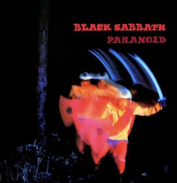
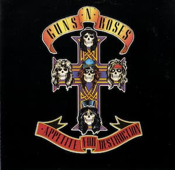
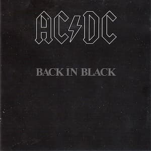
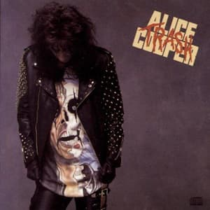
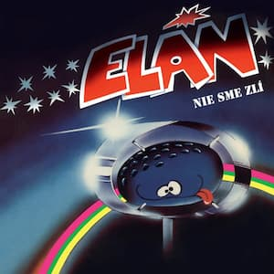
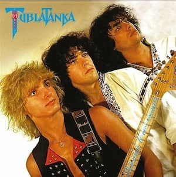
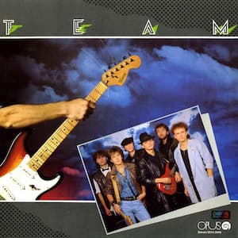

Známe Rockové Albumy
Zahraničná scéna
Rock sa nikdy nerobil len pre jednotlivé skladby. V 60. a 70. rokoch začali kapely pripravovať celé albumy ako uzavreté diela, kde piesne spolu súviseli hudobne aj tematicky. Niektoré z nich sa stali legendami: albumy ako The Dark Side of the Moon od Pink Floyd, Led Zeppelin IV alebo Back in Black od AC/DC sa predali v státisícoch až miliónoch kópií a ovplyvnili celé generácie poslucháčov aj hudobníkov. Na tejto stránke nájdeš prehľad najznámejších rockových albumov, ich interpretov a rok vydania.
| Interpret | Album | Rok |
|---|---|---|
| Elvis Presley | Elvis Presley | 1956 |
| Black Sabbath | Paranoid | 1970 |
| Led Zeppelin | Led Zeppelin IV | 1971 |
| Pink Floyd | The Dark Side of the Moon | 1973 |
| Alice Cooper | Billion Dollar Babies | 1973 |
| AC/DC | Back in Black | 1980 |
| Bon Jovi | Slippery When Wet | 1986 |
| Guns N' Roses | Appetite for Destruction | 1987 |
Slovenská scéna
Aj slovenský rock má svoje albumy, ktoré sa stali klasikou. Kapely ako Elán, Tublatanka a Team vydávali v 80. rokoch platne, ktoré sa predávali v desiatkach tisíc kópií a ich piesne poznajú generácie poslucháčov dodnes. Tvrdšiu stranu slovenskej scény zastupuje Metalinda, zatiaľ čo Horkýže Slíže a Helenine oči priniesli do rocku modernejší a drsnejší zvuk.
| Interpret | Album | Rok |
|---|---|---|
| Elán | Nie sme zlí | 1982 |
| Tublatanka | Skúsme to cez vesmír | 1987 |
| Team | Team 1 | 1988 |
| Metalinda | Metalinda | 1990 |
| Iné Kafe | Je tu niekto? | 2000 |






